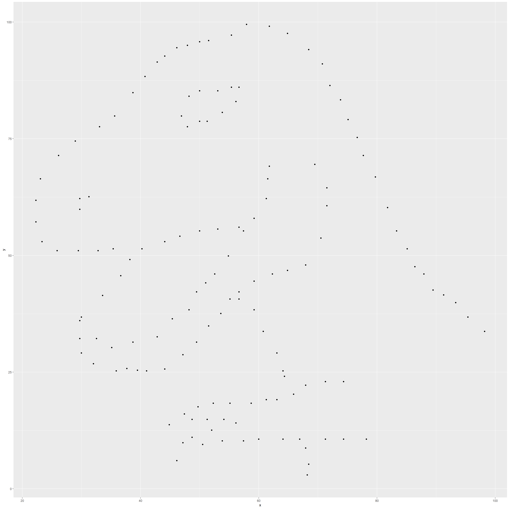
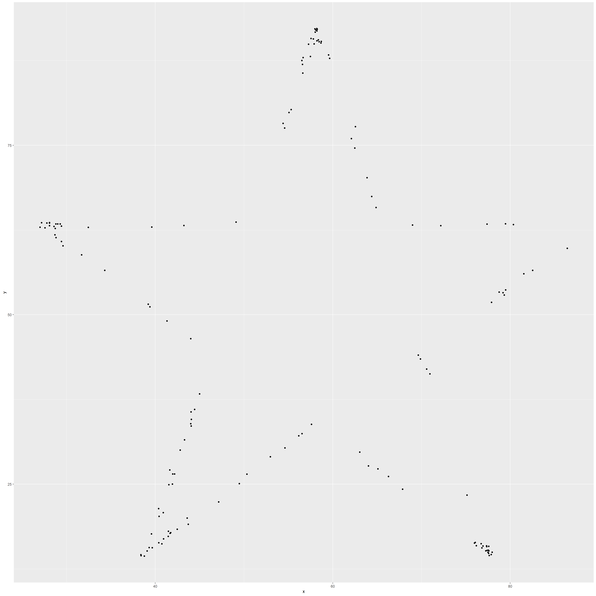
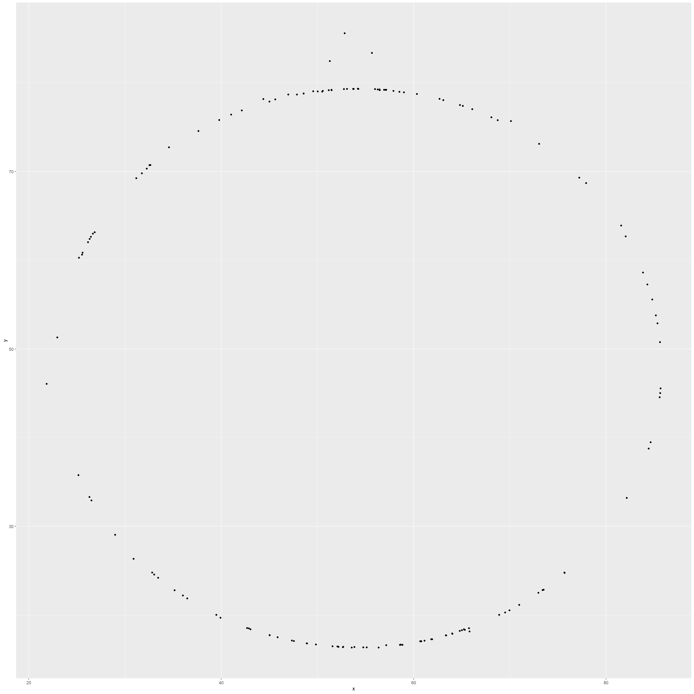
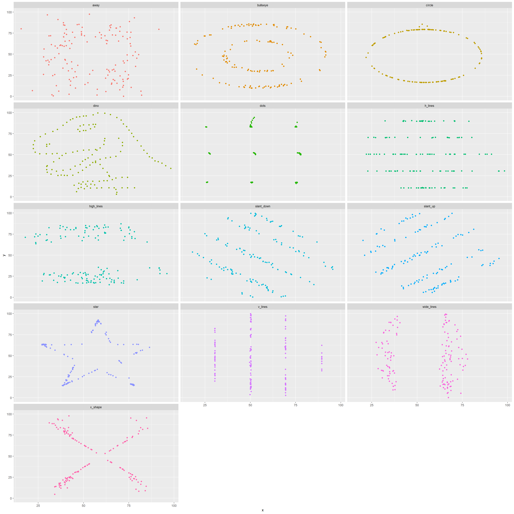

library(tidyverse)
library(datasauRus)
?datasaurus_dozen## 打开httpd帮助服务器… 好了datasaurus_dozen%>%count(dataset)%>%print(13)## # A tibble:
## # 13 × 2
## dataset
## <chr>
## 1 away
## 2 bullseye
## 3 circle
## 4 dino
## 5 dots
## 6 h_lines
## 7 high_lines
## 8 slant_down
## 9 slant_up
## 10 star
## 11 v_lines
## 12 wide_lines
## 13 x_shape
## # … with 1
## # more
## # variable:
## # n <int>dino_data = datasaurus_dozen %>%
filter(dataset == "dino")
ggplot(data = dino_data, mapping = aes(x = x, y = y)) +
geom_point()
dino_data %>%
summarize(r = cor(x, y))## # A tibble: 1 × 1
## r
## <dbl>
## 1 -0.0645dino_data = datasaurus_dozen %>%
filter(dataset == "star")
ggplot(data = dino_data, mapping = aes(x = x, y = y)) +
geom_point()
dino_data %>%
summarize(r = cor(x, y))## # A tibble: 1 × 1
## r
## <dbl>
## 1 -0.0630dino_data = datasaurus_dozen %>%
filter(dataset == "circle")
ggplot(data = dino_data, mapping = aes(x = x, y = y)) +
geom_point()
dino_data %>%
summarize(r = cor(x, y))## # A tibble: 1 × 1
## r
## <dbl>
## 1 -0.0683ggplot(datasaurus_dozen, aes(x = x, y = y, color = dataset))+
geom_point()+
facet_wrap(~ dataset, ncol = 3) +
theme(legend.position = "none")
datasaurus_dozen %>%
group_by(dataset) %>%
summarize(r = cor(x, y)) %>%
print(13)## # A tibble:
## # 13 × 2
## dataset
## <chr>
## 1 away
## 2 bullseye
## 3 circle
## 4 dino
## 5 dots
## 6 h_lines
## 7 high_lines
## 8 slant_down
## 9 slant_up
## 10 star
## 11 v_lines
## 12 wide_lines
## 13 x_shape
## # … with 1
## # more
## # variable:
## # r <dbl>